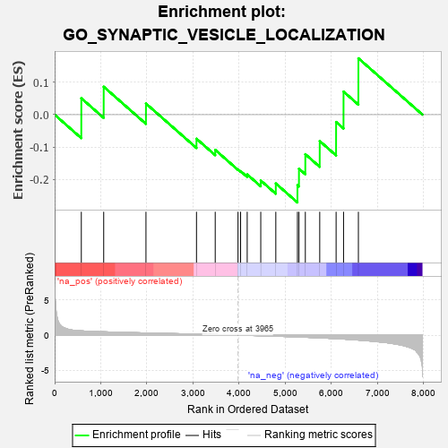

| | | Dataset | 7d |
| Phenotype | NoPhenotypeAvailable |
| Upregulated in class | na_neg |
| GeneSet | GO_SYNAPTIC_VESICLE_LOCALIZATION |
| Enrichment Score (ES) | -0.2717477 |
| Normalized Enrichment Score (NES) | -0.665239 |
| Nominal p-value | 0.8905817 |
| FDR q-value | 1.0 |
| FWER p-Value | 1.0 |
Table: GSEA Results Summary

Fig 1: Enrichment plot: GO_SYNAPTIC_VESICLE_LOCALIZATION
Profile of the Running ES Score & Positions of GeneSet Members on the Rank Ordered List
| PROBE | GENE SYMBOL | GENE_TITLE | RANK IN GENE LIST | RANK METRIC SCORE | RUNNING ES | CORE ENRICHMENT | | 1 | MX1 | | | 578 | 0.604 | 0.0508 | No |
| 2 | AP3S1 | | | 1063 | 0.471 | 0.0865 | No |
| 3 | BRSK2 | | | 1979 | 0.308 | 0.0344 | No |
| 4 | MAP2 | | | 3074 | 0.140 | -0.0745 | No |
| 5 | CDK5 | | | 3480 | 0.080 | -0.1090 | No |
| 6 | AP3B2 | | | 3974 | -0.002 | -0.1705 | No |
| 7 | TOR1A | | | 4030 | -0.013 | -0.1748 | No |
| 8 | SYNJ1 | | | 4173 | -0.038 | -0.1849 | No |
| 9 | LRRK2 | | | 4467 | -0.087 | -0.2039 | No |
| 10 | PCLO | | | 4793 | -0.156 | -0.2129 | No |
| 11 | PTEN | | | 5262 | -0.261 | -0.2183 | Yes |
| 12 | MAGI2 | | | 5295 | -0.269 | -0.1672 | Yes |
| 13 | AP3S2 | | | 5433 | -0.303 | -0.1224 | Yes |
| 14 | MX2 | | | 5745 | -0.390 | -0.0817 | Yes |
| 15 | AP3M1 | | | 6100 | -0.506 | -0.0227 | Yes |
| 16 | AP3D1 | | | 6261 | -0.558 | 0.0714 | Yes |
| 17 | ARF1 | | | 6583 | -0.701 | 0.1745 | Yes |
Table: GSEA details [plain text format]
Fig 2: GO_SYNAPTIC_VESICLE_LOCALIZATION: Random ES distribution
Gene set null distribution of ES for GO_SYNAPTIC_VESICLE_LOCALIZATION